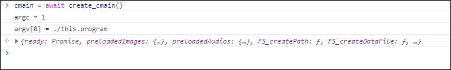

cmain.js は emsdk でビルドされた簡単な WebAssembly です。
ビルドシステムの都合で、単一の .js へ結合した状態で欲しかったため
(本来は .js と .wasm に別れるところ)
-s SINGLE_FILE=1 を指定してビルドしています。
使用方法は、開発者ツールのコンソール機能を開いて実験してください。 通常は F12 を押下することで開きます。
例:
cmain = await create_cmain()cmain が起動した Module になります。この方法ですと main を実行してしまいます。

例:
cmain = await create_cmain({noInitialRun: true})cmain が起動した Module になります。この方法ですと main は実行されません。
改めて callMain を使用し main を実行しましょう。
cmain.callMain(["入力ファイル名","-o","出力ファイル名"])tiff2pdf.js と tiff2pdf.wasm は emsdk でビルドされた tiff2pdf の WebAssembly 版です。
こちらへ TIFF ファイルを投入してください
ここに PDF を表示します
手動版の使用方法は、開発者ツールのコンソール機能を開いて実験してください。 通常は F12 を押下することで開きます。
例:
tiff2pdf = await create_tiff2pdf({noInitialRun: true})
tiff2pdf.FS.writeFile("/tmp/input.tif", new Uint8Array([0x49,0x49,0x2A,0x00,0x20,0x00,0x00,0x00,0x80,0x3F,0xE0,0x4F,0xF0,0x04,0x16,0x0D,0x07,0x82,0xC0,0xE0,0x90,0x88,0x64,0x2A,0x19,0x0D,0x81,0xC3,0xE1,0x10,0x10,0x00,0x15,0x00,0xFE,0x00,0x04,0x00,0x01,0x00,0x00,0x00,0x02,0x00,0x00,0x00,0x00,0x01,0x03,0x00,0x01,0x00,0x00,0x00,0x04,0x00,0x00,0x00,0x01,0x01,0x03,0x00,0x01,0x00,0x00,0x00,0x04,0x00,0x00,0x00,0x02,0x01,0x03,0x00,0x04,0x00,0x00,0x00,0x32,0x01,0x00,0x00,0x03,0x01,0x03,0x00,0x01,0x00,0x00,0x00,0x05,0x00,0x00,0x00,0x06,0x01,0x03,0x00,0x01,0x00,0x00,0x00,0x02,0x00,0x00,0x00,0x0A,0x01,0x03,0x00,0x01,0x00,0x00,0x00,0x01,0x00,0x00,0x00,0x11,0x01,0x04,0x00,0x01,0x00,0x00,0x00,0x08,0x00,0x00,0x00,0x12,0x01,0x03,0x00,0x01,0x00,0x00,0x00,0x01,0x00,0x00,0x00,0x15,0x01,0x03,0x00,0x01,0x00,0x00,0x00,0x04,0x00,0x00,0x00,0x16,0x01,0x03,0x00,0x01,0x00,0x00,0x00,0x00,0x02,0x00,0x00,0x17,0x01,0x04,0x00,0x01,0x00,0x00,0x00,0x17,0x00,0x00,0x00,0x1A,0x01,0x05,0x00,0x01,0x00,0x00,0x00,0x22,0x01,0x00,0x00,0x1B,0x01,0x05,0x00,0x01,0x00,0x00,0x00,0x2A,0x01,0x00,0x00,0x1C,0x01,0x03,0x00,0x01,0x00,0x00,0x00,0x01,0x00,0x00,0x00,0x1D,0x01,0x02,0x00,0x07,0x00,0x00,0x00,0x42,0x01,0x00,0x00,0x28,0x01,0x03,0x00,0x01,0x00,0x00,0x00,0x02,0x00,0x00,0x00,0x29,0x01,0x03,0x00,0x02,0x00,0x00,0x00,0x00,0x00,0x00,0x00,0x3D,0x01,0x03,0x00,0x01,0x00,0x00,0x00,0x02,0x00,0x00,0x00,0x52,0x01,0x03,0x00,0x01,0x00,0x00,0x00,0x02,0x00,0x00,0x00,0x53,0x01,0x03,0x00,0x04,0x00,0x00,0x00,0x3A,0x01,0x00,0x00,0x00,0x00,0x00,0x00,0x2C,0x01,0x00,0x00,0x01,0x00,0x00,0x00,0x2C,0x01,0x00,0x00,0x01,0x00,0x00,0x00,0x08,0x00,0x08,0x00,0x08,0x00,0x08,0x00,0x01,0x00,0x01,0x00,0x01,0x00,0x01,0x00,0x50,0x61,0x67,0x65,0x20,0x30,0x00]))
tiff2pdf.callMain(["-o", "/tmp/output.pdf", "/tmp/input.tif"])
pdfByteArray = tiff2pdf.FS.readFile("/tmp/output.pdf")
pdfBlob = new Blob([pdfByteArray], {type: "application/pdf"})
fileReader = new FileReader()
fileReader.readAsDataURL(pdfBlob)
document.getElementById("viewer").data = fileReader.result
ここに PDF を表示: